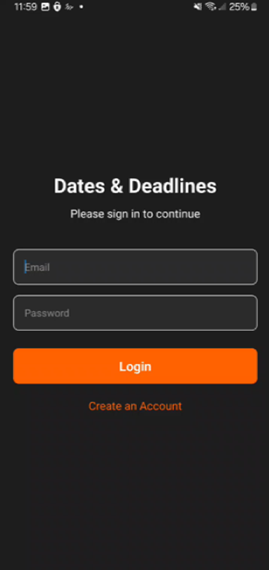
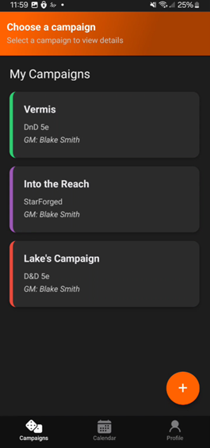
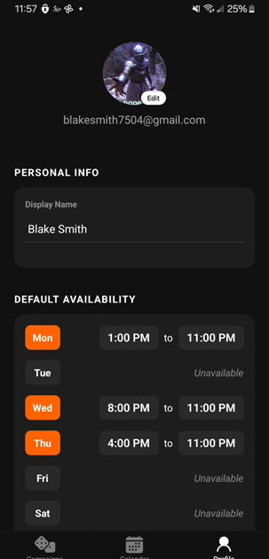

Dates & Decisions: D&D Session Calendar
Dates & Decisions is a cross-platform mobile application designed to solve the "scheduling boss" problem in tabletop gaming. It provides a centralized hub for Dungeon Masters and players to coordinate availability, propose sessions, and track RSVPs in real-time across multiple campaigns.
UI ShowcaseLogin

Campaigns

Profile

The app features a clean, gesture-driven interface that separates scheduling from group chat noise. By scoping the calendar to specific "Campaigns," players can manage their gaming life without context-switching between different platforms.
The source code is closed-source, but you can view what I presented in my senior capstone project on GitHub.
Technologies Used
React Native & Expo
React Native serves as the frontend framework, allowing for a single TypeScript codebase to deploy to both iOS and Android. Expo was utilized to streamline the development lifecycle, handling the managed workflow for push notifications, device permissions, and rapid prototyping via the Expo Go environment.
React Navigation (Expo Router) drives the app's file-based routing system, managing complex nested stacks for campaign details and modal-based session proposing.
React Native Calendars provides the core interactive layer, which was customized with a dynamic marking system to display campaign-themed "dots" for scheduled sessions.
Lucide React Native provides the consistent iconography used throughout the interface to maintain a professional, minimalist aesthetic.
Cloud Firestore (NoSQL)
Google Firebase serves as the application's real-time backend. Rather than a traditional relational database, Dates & Decisions utilizes Cloud Firestore to store campaign data and session sub-collections as JSON-like documents. This allows for live synchronization; when a GM proposes a session, the change is pushed to every player's device instantly without requiring a manual refresh.
Firebase Authentication
Security and user identity are managed through Firebase Auth. This handles the session persistence and secures the database, ensuring that only users listed as "players" in a specific campaign document have the permissions to view or RSVP to its scheduled sessions.
TypeScript
The entire application is written in TypeScript to ensure type safety across the Data Access Layer. By defining strict interfaces for "Campaign" and "Session" objects, the app prevents runtime errors during the complex "live-stitching" process where campaign metadata is merged with session data for the calendar view.
Further Development before Launch
Developed as a Senior Capstone project in my Software Engineering class at Trevecca Nazarene University, Dates & Decisions has a roadmap for expansion into a full-scale app that I may to pursue in the near future.
Push Notifications
While the current build focuses on scheduling, integrating dedicated push notification functionality would keep players informed about session updates and reminders. This keeps the app helpful even for players who struggle to keep track of their commitments.
Advanced Availability Analytics
Future iterations could include a "Heatmap" feature where players mark their general weekly availability. The system would then automatically highlight overlapping "golden windows" on the calendar, suggesting the best possible dates to the Dungeon Master and significantly reducing the trial-and-error nature of scheduling.
External Calendar Integration
To further reduce friction, integrating with Google Calendar or iCal via their respective APIs would allow players to see their "real-world" obligations alongside their D&D sessions. This would transform the app from a standalone tool into a comprehensive lifestyle manager for tabletop enthusiasts.